Welcome to My Kitchen
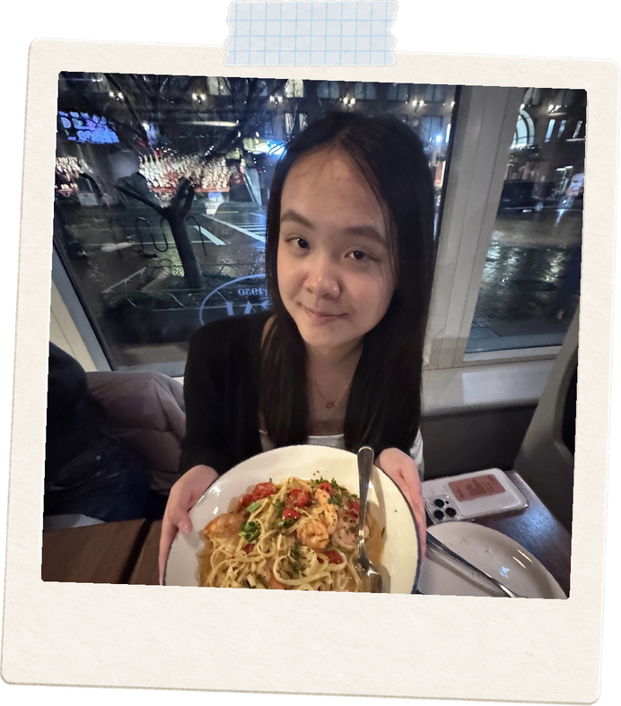
Made in my kitchen
I’m always happiest when there’s something cooking. Usually it’s soup noodles, hotpot, or whatever I feel like experimenting with that day. This is a little collection of meals I’ve made, shared, and probably cooked way too much of.
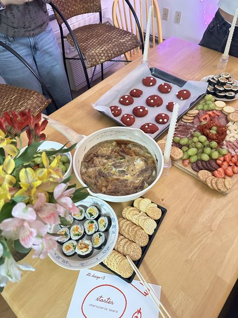
Enoki Beef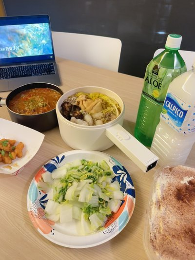
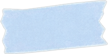
Beef Sukiyaki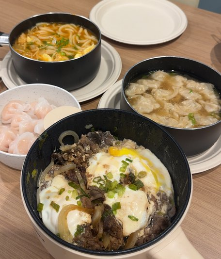
Beef udon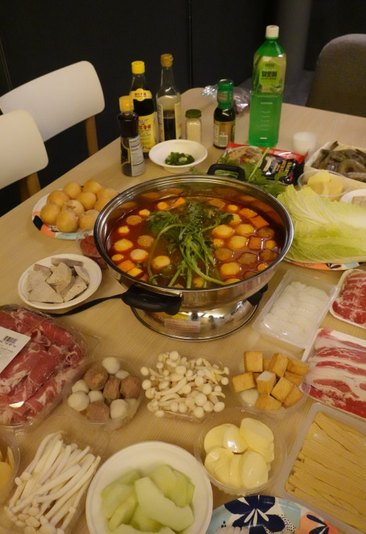
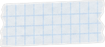
Hotpot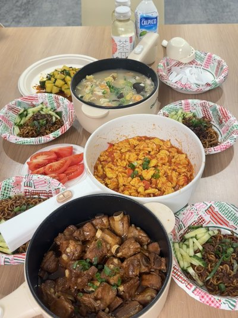
Tomato & Egg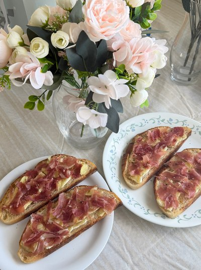
Prosciutto Brie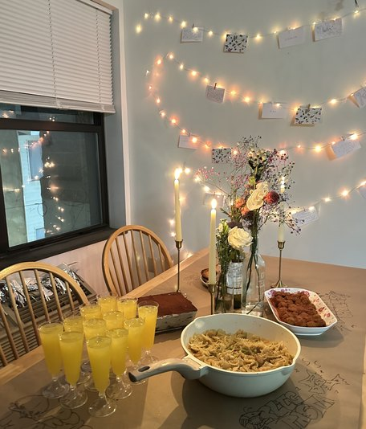
Italian Dinner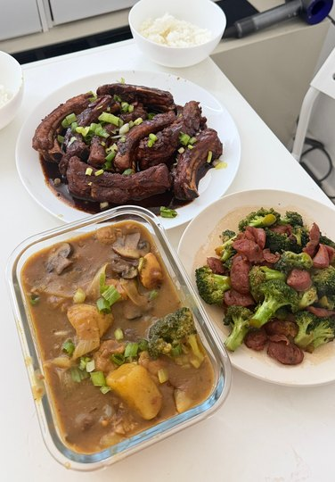
Braised Ribs